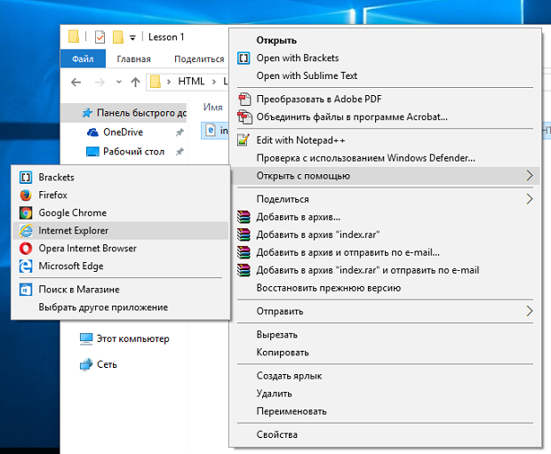

Что такое HTML и почему его должен знать каждый веб- разработчик
Что такое HTML и для чего он используется? Это язык программирования? Как долго его учить?
HTML (от английского HyperText Markup Language) — это язык гипертекстовой разметки страницы.
Он используется для того, чтобы дать браузеру понять, как нужно отображать загруженный сайт.
Программы для просмотра HTMLдокументов. Чем открыть HTML файл?
Мы уже упоминали о том, что для просмотра HTML документов используются браузеры.
Когда вы вводите в строку браузера URL сайта, он ее анализирует и устанавливает
HTTP соединение
с сервером. По
специальным HTTP заголовкам
и
методам запроса
сервер «понимает», какой HTML документ и в каком виде «хочет» получить браузер и высылает ему в ответ специальное
HTTP сообщение
, в котором содержится HTML документ.
Получив HTML документ, браузер его начинает анализировать. Сначала он считывает значение тэга DOCTYPE,
чтобы понять, какая версия HTML используется, затем браузер анализирует различные мета-тэги, чтобы понять,
как ему отображать документ. Далее браузер анализирует HTML тэги, которые отвечают за структуру и отображение
документа, проанализировав всю эту информацию, браузер формирует страницу, которую показывает пользователю.
На данный момент написано очень много программ, позволяющих посмотреть HTML документ. Для примера скажем, что
справочники в формате chm – это тоже HTML, но они используют специальные HTML тэги (frame). Самыми популярными
программа для просмотра HTML являются браузеры:
Есть еще много браузеров, но все они не такие популярны, как те, что я перечислил выше.
Обычно HTML документ имеет формат .htm или .html. Если в основе вашего сайта лежит CMS,
то код HTML страниц может генерироваться автоматический, но какой бы «умной» CMS не была,
она не «способна» генерировать полностью всю структуру HTML документа самостоятельно, а для
некоторых сайтов, например, одностраничников, CMS вообще не требуется.
Программы для написания HTML кода. Как создать HTML страницу?
Мы можем просматривать HTML документы, но так же нам никто не запрещает
создавать HTML документы, для создания HTML документа вы можете использовать
специальные текстовые редакторы, которых сейчас очень много и которые имеют
различный функционал (вы даже можете использовать обычный блокнот ),
давайте посмотрим на самые популярные HTML редакторы:
Есть еще масса HTML редакторов, как очень сложных, так и очень простых. Здесь мы
рассмотрели только самые популярные и удобные редакторы для создания HTML страниц.
Давайте разберемся с вопросом: как создать HTML страницу. Замечу, что я планирую написать
целую серию записей, в которой мы с вами будем изучать HTML, поэтому предлагаю упорядочить
наши примеры и создать папку HTML, в которой будут храниться все примеры, внутри папки HTML
создайте папку Lesson 1. Чтобы создать HTML страницу откройте любой редактор, пусть это даже
будет Блокнот и напишите в форме для редактирования любое предложение, я напишу: «Hello, World!».
Создаем первую HTML страницу в Блокноте
После этого сохраните данный файл в папку Lesson 1, назовите файл index.html или index.htm.
Сохраняем первый HTML документ в рабочей папке
Обратите внимание: именовать HTML файлы можно как вам угодно, позже мы разберемся с тем, для чего давать файлу имя index.
А теперь перейдите в папку Lesson 1 и откройте созданный HTML файл в браузере, для этого: нажмите правой кнопкой мыши по файлу
index.html и выберете любой удобный браузер. Я открою созданную HTML страницу в Опере:

Открываем созданную HTML страницу в браузере
Мы создали свою первую HTML страницу, вернее, первый HTML документ и увидели HTML страницу в браузере.
Таким образом браузер отобразит созданный HTML документ
Замечу, что этот HTML документ неправильный или, как говорят разработчики, невалидный, больше никогда не создавайте
таких HTML документов и, надеюсь, что последующие записи в моем блоге помогут вам изучить HTML и создавать правильные
или валидные HTML документы легко и непринуждённо. Здесь важно, что мы научились создавать HTML страницы и поняли, что
это не так сложно.
Возможности языка HTML, где используется HTML
Теперь давайте поговорим про возможности языка HTML и о том, где язык HTML используется. Обратите внимание:
сейчас мы будем рассматривать базовые возможности HTML 4.01, чтобы не усложнять первое знакомство с HTML. Так же
заметим, что рассматривать возможности HTML 5 стоит только после того, как вы изучили базовые возможности, так будет
гораздо проще и понятнее.
Приступим к рассмотрению возможностей HTML. Основной задачей языка HTML является структурирование информации
на странице. Язык HTML позволяет структурировать информацию различными способами: создавать таблицы, различные
виды списков, параграфы, добавлять в документ изображения, разбивать документ на части при помощи заголовков,
создавать формы для взаимодействия с пользователями, связывать разные HTML документы списками.
Хотя основной задачей HTML является разметка документа или создание структуры, но у данного языка есть и элементы
оформления, для этого есть специальные тэги, которые позволяют выделить текст, сделав его жирным или курсивным,
сделать индекс или подиндекс и многое другое, обо всем этом мы поговорим подробно. Сейчас нам стоит сказать о том, что
некоторые HTML тэги из-за своей неактуальности считаются запрещенными, а использование некоторых тэгов считается
дурным тоном.
Для оформления HTML документов и для того, чтобы сделать HTML тэги уникальным были придуманы HTML атрибуты,
но на данный момент никто не использует HTML атрибуты для оформления документов, так как существуют каскадные
таблицы стилей или CSS. Есть исключения, например, некоторые почтовые клиенты не умеют работать с CSS и для
оформления электронных писем используются HTML атрибуты.
Основой и самой массовой сферой применения HTML является сеть Интернет. Каждый сайт для представления
информации пользователю в графическом виде использует HTML, но интернетом HTML не ограничивается, его очень
активно используют при разработке мобильных и десктопных приложений для различным операционных систем.
Надеюсь, что я дал понятные и просты ответы на вопросы: что такое HTML, для чего нужен HTML, как создать
HTMLстраницу и о сферах применения HTML.
Сайты которыми стоит пользоваться
GitHub— это сайт-хранилище для историй версий проектов вы подключаете Git,
регистрируетесь на GitHub, создаёте онлайн-репозиторий и переносите файлы с Git на GitHub.
CodePen
— интернет-сообщество, созданное для тестирования и показа сниппетов на основе
HTML,
CSS и
JavaScript.
HTML5-хороший справочник, который станет вам путеводителем